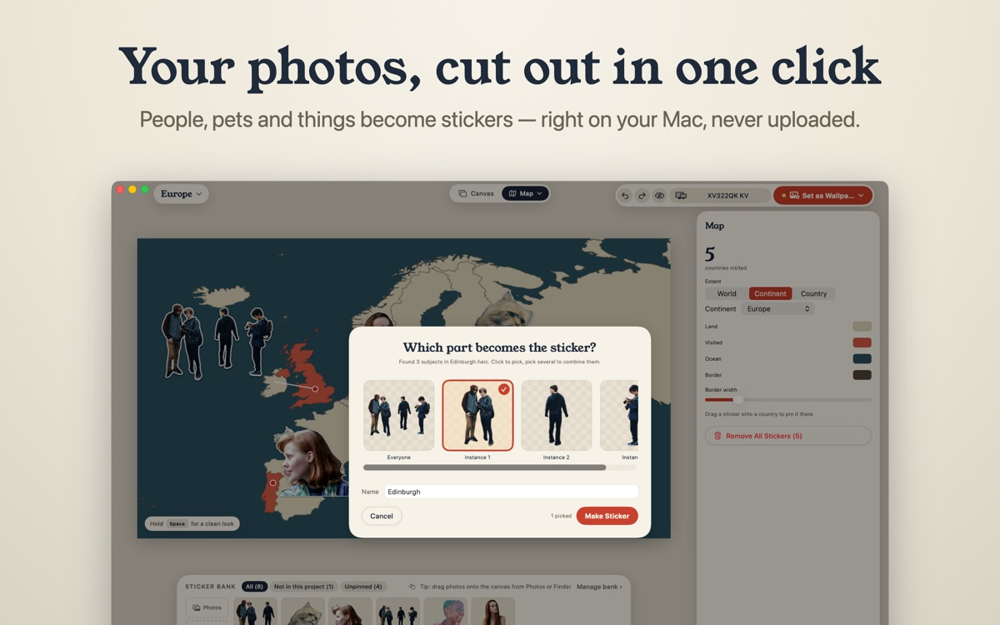

How to cut a person out of a photo on a Mac
In short: For a quick one-off cutout, macOS can already do it in Photos and Preview. If you want to turn the cutouts into stickers and put them on your desktop, Sticta does the cutout, the sticker and the wallpaper in one place.
Copy Subject in Photos
Open the photo in the Photos app, Control-click the person and choose Copy Subject. The cutout goes to the clipboard with a transparent background, ready to paste into Keynote, Pages, Messages or an image editor. It is the fastest option when you need one cutout once.
Remove Background in Preview
Open the photo in Preview and choose Tools → Remove Background. Preview keeps the subject and deletes the rest. Save it as PNG (File → Export) to keep the transparency; JPEG would fill the background with white.
Sticta: cutouts as stickers on your wallpaper
Sticta uses the same kind of on-device subject detection, then goes further:
- Pick who stays. In a group photo, choose one person, a few or everyone.
- Fix the edges. An erase and restore brush works on whole chunks, not single pixels, so a missed ear or a bit of background takes a second to fix.
- Make it a sticker. A thick white outline hides ragged edges, plus a soft shadow and an optional Polaroid frame.
- Put it somewhere. Stick it on a travel map, a fridge door, a corkboard or your own background, and set the result as your Mac wallpaper.

Tips for a clean cutout
- Photos where the person stands out from the background cut best: contrast beats resolution.
- Keep the whole person in the frame. Cut-off feet or heads look odd as stickers.
- Flyaway hair is the hardest part for any tool. A white sticker outline hides most of it.
- Pets work too: dogs and cats are detected like people.
Nothing gets uploaded
Copy Subject, Preview and Sticta all cut out on your Mac. Online background removers upload your photo to their servers; with these three, it stays on your disk. Sticta's privacy policy.
Free to download · Sticta Unlimited is a one-time purchase · Mac with Apple silicon, macOS 14 or later